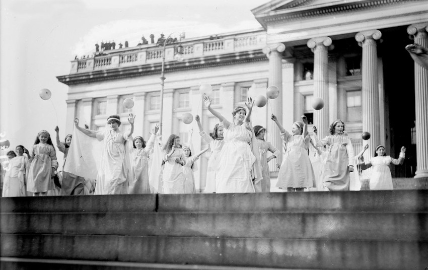

Tableaux, Treasury Wash., D.C. (Suff. Pageant) | Library of
Congress | Dominio público
Desde sus inicios, el congreso Museum Next se ha preguntado sobre el futuro de
los centros culturales. En su última edición en Londres, los debates más
importantes han girado alrededor del papel y la responsabilidad de los museos a la
hora de incorporar múltiples voces y comunidades en su actividad.
Museum Next es uno de los fórums profesionales donde poder captar cuáles son
los intereses, los retos y algunos de los proyectos estrella en los que están
trabajando los museos y espacios culturales de todo el mundo. En 2024, y
después de cinco años de parón de los encuentros presenciales, Museum Next
Live se celebró en Londres del 10 al 13 de junio. El acontecimiento funciona como
un buen termómetro del estado anímico de los museos y de los equipos que allí
trabajan. Y este año, si tuviéramos que medir la temperatura de la euforia digital y
tecnológica que ha dominado las tendencias museísticas en los últimos tiempos,
podríamos asegurar que nos encontramos fríos, bajo cero. De las tres jornadas de
Museum Next Live Londres, solo una se dedicó a proyectos y estrategias digitales,
mientras que el segundo y tercer día dominaron las presentaciones y las
conversaciones sobre las múltiples y ricas experiencias educativas, de mediación
y de trabajo con públicos que están impulsando las organizaciones culturales. En
pocas palabras, se habló muy poco de TikTok, algo de inteligencia artificial y
muchísimo de cómo transformar las instituciones culturales en espacios más
abiertos, diversos e integradores.
El discurso general que planeó el evento fue la defensa del museo sostenible,
ético y accesible, inclusivo con las personas, las comunidades y el vecindario. Un
museo donde la participación del público vaya más allá de compartir fotos bonitas
en Instagram y que despliegue programas educativos y de mediación que
incorporen a personas históricamente excluidas de los grandes relatos y
equipamientos culturales.
Resulta difícil resumir un evento de tres días con cerca de cuatrocientos asistentes
de más de cien organizaciones culturales y con un programa de cincuenta
actividades —entre talleres, visitas culturales y presentaciones— que tuvieron
lugar en ocho sedes. Aun así, compartimos un breve listado de los museos, las
personas, las experiencias y las ideas más inspiradoras de Museum Next 2024..
El Young Victoria&Albert Museum, o cuando los niños deciden cómo es el
museo de sus sueños
Si hay una joya de la corona entre el riquísimo ecosistema de museos londinenses
es el renovado Young V&A. Ubicado en un precioso edificio victoriano en el
multiétnico distrito de Bethnal Green, el museo (que reabrió sus puertas en el
verano de 2023) fue pensado y diseñado por niños y niñas de escuelas del barrio
tras un proceso de cocreación con expertos y con el equipo educativo del
V&Albert. Helen Charman, responsable de esta transformación y Director of
Learning & National Programmes, nos guio por las diferentes galerías y espacios
de juego, fantasía y aprendizaje del museo, que muestra alrededor de dos mil
piezas de la colección del Victoria&Albert desde la sorprendente mirada de los
pequeños. Poquísimas pantallas y muchos espacios acogedores de diseño
precioso, un museo ejemplar que está pensado para despertar la curiosidad y el
ingenio de personas de tres a catorce años, pero que es imposible que no
enamore a todo el mundo. Podéis leer más sobre cómo se hizo el museo aquí
The Migration Museum of London, el museo que nació (y creció) dentro de
un centro comercial
¿Os imagináis un museo dentro de un centro comercial? Ruido, productos por
todas partes y multitudes comprando a toda velocidad. Con este panorama hostil,
en el año 2020 se abrió el Migration Museum de Londres dentro del centro
comercial de Lewisham. Las exposiciones y las actividades se llevaban a cabo
entre tiendas de zapatillas de deporte y Starbucks. La experiencia, después de
cuatro años de funcionamiento y según la directora artística Aditi Anand, no puede
haber sido más provechosa y enriquecedora. Con más de siete mil visitantes
mensuales, el Migration Museum dentro del centro comercial de Lewisham. Las
exposiciones y las actividades se llevaban a cabo entre tiendas de zapatillas de
deporte y Starbucks. La experiencia, después de cuatro años de funcionamiento y
según la directora artística Aditi Anand, no puede haber sido más provechosa y
enriquecedora. Con más de siete mil visitantes mensuales, el Migration Museum
ha tenido un impacto y generado experiencias culturales relevantes entre el
vecindario y los habituales del centro comercial. ¿Qué ha pasado? Pues que el
museo se ha instalado donde la gente ya estaba y, si tuviéramos que escoger un
espacio popular donde encontrar movimiento, variedad y diversidad de personas,
tal vez optaríamos por un centro comercial. Match perfecto para un museo que,
tras haber realizado un esfuerzo inmenso para adaptarse a un entorno peculiar, ha
encontrado por fin una ubicación definitiva y a partir de 2026 deberá volver a
reinventarse dentro de un edificio de estudiantes.
Welcome back to the Migration Museum
Tener una estrategia digital en tu museo no es tan… difícil
People don’t hate change. People hate change when they don’t have agency.
— Nick Hodder
Nick Hodder es Assistant Director of Digital Transformation de los Imperial War
Museums , una red de museos históricos dedicados a la guerra con cinco sedes
por toda Gran Bretaña. En Museum Next habló de cómo hacer realidad una
estrategia digital (sin morir en el intento). Lo que suele ocurrir cuando
organizaciones culturales grandes y con gran cantidad de recursos explican cómo
se organizan digitalmente es que algunos de los asistentes en la sala suspiran y
piensan, con resignación: Sí, muy bien, quizás algún día pasará eso en mi
(pequeño y desorganizado) museo. Sin embargo, Hodder aportó ideas y consejos
sensatos y extensibles a cualquier museo. El primero y más importante: es
imposible realizar ningún cambio estratégico en un museo si las personas que son
responsables carecen de agencia, capacidad de acción y de toma de decisiones.
Dicho de otra forma, dejad de redactar informes y planes de futuro si no tenéis
todo el apoyo interno para ejecutarlos. Otros consejos interesantes y de sentido
común: no os dejéis deslumbrar por la velocidad de las innovaciones tecnológicas
y centrad las estrategias digitales en el público a quien van dirigidas, estad
preparados para equivocaros y para adaptaros constantemente, conoced bien la
cultura organizativa interna para no generar demasiadas expectativas y plantead
estrategias realistas y adaptadas a los recursos de vuestra organización. Factores
como la creatividad o la confianza con los equipos internos son, para Hodder, más
relevantes que ambicionar planes de futuro muy exigentes. Necesitamos
estrategias de adaptabilidad y no digitales, concluyó..
Curadoría dinámica o cómo capacitar al público para intervenir en una
exposición
Enriquecer los programas y los contenidos culturales incorporando el conocimiento
y la experticia de las personas que visitan el museo o participan en sus actividades
es algo deseable pero ¿hasta dónde están dispuestas las instituciones culturales a
abrirse a la participación externa y perder el control de su discurso?
Página 4 de 12
Verónica Reyes Carrillo es mediadora cultural y responsable de Diversidad e
Inclusión en el Museum for Communication de Berna (Suiza), y, juntamente con el
comisario Ulrich Schenk, hablaron de curadoría dinámica, una práctica que han
aplicado a algunas de las exposiciones y que consiste en crear dinámicas de
mediación dentro de las salas para que los visitantes puedan dar su opinión, poner
en cuestión y/o modificar el discurso expositivo. Un ejemplo es la iniciativa Words
Matter, que invita a las personas que visitan una exposición a señalar con
pegatinas textos que consideran que contienen palabras ofensivas o frases
inapropiadas. El equipo de mediación del Museum for Communication trabaja para
recibir, escuchar, validar, incorporar y visibilizar otros discursos. Entender que los
museos son espacios vivos, permeables a la crítica y a miradas más diversas es
una de las razones de ser de la mediación cultural, tal y como lo entiende Verónica
Reyes. Comenzar a tratar a las personas que visitan los museos como game-changers es el camino.
Rundflug durchs Museum für Kommunikation, das PTT-Archiv und
das Depot Schwarzenburg
Proyectos educativos y de mediación: ¿es posible crear vínculos largos y
duraderos con comunidades diversas?
Sonia Mutaganza y Fouzia Sadala son dos jóvenes afrodescendientes que
trabajan en el museo de la fotografía de Amberes (Bélgica), el FOMU, en la
producción y la curadoría de actividades. Hace muy poco años acudían al FOMU
como participantes de sus programas públicos hasta que el museo las contrató.
Entrar a formar parte de la plantilla de un equipo cultural es, según ellas,
fundamental para crear museos realmente más inclusivos. Ahora lideran proyectos
dentro de la organización, como las Community Dinners, cenas en las que
explican la programación futura del FOMU a entidades y asociaciones que forman
parte del tejido asociativo y artístico de la ciudad, o el NightWatch, un programa de
residencias artísticas que atrae a jóvenes de entre 16 y 26 años para que
desarrollen proyectos propios. Dejar de tratar a las personas como simples
números, estar abierto a la crítica y trabajar relaciones de confianza a largo plazo
con las comunidades de usuarios son algunas de las claves para construir museos
más abiertos y diversos. «Hay que dar oportunidades a los jóvenes y tratarlos de
igual a igual, como a colegas, expertos y críticos», explicaron. La burocracia y tener
unas expectativas muy altas ante un proyecto son algunas de las trabas con las
que se encuentran. Su caso es un ejemplo inspirador de que es posible romper las
paredes del museo para integrar a personas brillantes y críticas..
¿Cómo asentar los discursos queer y decoloniales en la práctica cultural?
Dos nombres de personas expertas a tener muy en cuenta: Dina Jezdic y
Margaret Middleto. Ambas participaron en Museum Next en presentaciones
diferentes pero que tenían en común un punto fundamental: los museos del futuro
son aquellos dispuestos a cambiar y a integrar de forma coherente y cuidadosa las
prácticas artísticas y los discursos queer y decoloniales. Dina Jezdic es comisaria
independiente, programadora y experta en arte feminista, antirracista e indígena.
En Londres habló de prácticas curatoriales decoloniales en museos, tema sobre el
que ha basado su tesis doctoral.
Margaret Middleton es diseñadora de exposiciones y ha escrito numerosos
artículos y publicaciones sobre cómo conseguir una inclusión efectiva de las
comunidades LGBTQ en la programación y en los contenidos de las exposiciones.
En su web podréis encontrar artículos especializados y recursos realmente útiles
Conclusión general
Los museos serán sociales o no serán. Serán museos del futuro los que sepan
convertirse en espacios maleables, poco rígidos y preparados para el cambio
permanente. Con más o menos recursos tecnológicos, los museos relevantes —
sean grandes o pequeños— serán aquellos que consigan tener una identidad
propia y genuina, espacios preparados para integrar múltiples voces a sus
colecciones y actividades y con facilidad y habilidad para hacer llegar a la gente
historias potentes y significativas.